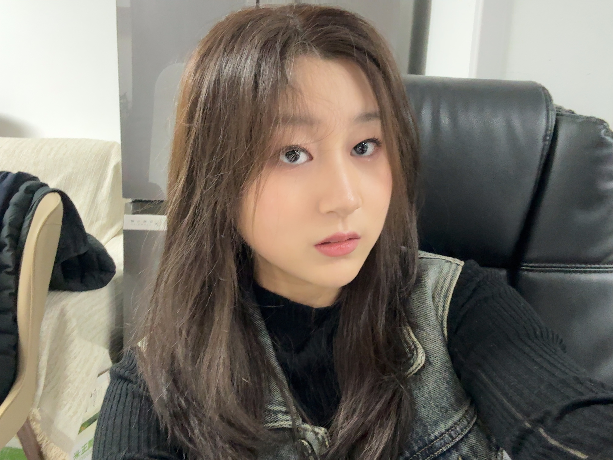

学校
University
首都医科大学
专业
Major
临床医学（5+3）
入学年份
Enrollment
2023年9月
感兴趣的方向
Interest
临床医学
经历与成就
学生工作 - 班长
Student Work - Class Monitor
担任班长期间，牵头组织班级班风建设活动，积极组织各项班级活动；同时带头积极与其他专业班级联络，促进本班与其他专业同学的交流。
学生会工作 - 学术部部长
Student Union - Minister of Academic Dept.
作为基院学生会学术部部长，主导策划“前辈说”系列讲座3期，组织京津冀五校联合“医盟杯”学术竞赛，参与学生超600人次。
团支部工作
Youth League Branch Work
积极协助团支部组织各项活动，覆盖党史学习、医德教育等内容，协助班内公众号的运营。
志愿服务
Volunteer Service
积极参与志愿服务，2024年累计时间超140小时。
社团与文体活动
Clubs & Activities
积极参与校内多项社团活动，参与校内Side Effects乐队企划，并在2023年度基础医学院“达人秀”活动中获得“曲逸泉韵奖”称号。
荣誉称号
Honorary Titles
曾多次获得三好学生称号。
荣誉与奖学金
- 2024 (Sophomore) 校级优秀三等奖学金、校级优秀干部
- 2023 (Freshman) 校级社会工作奖学金